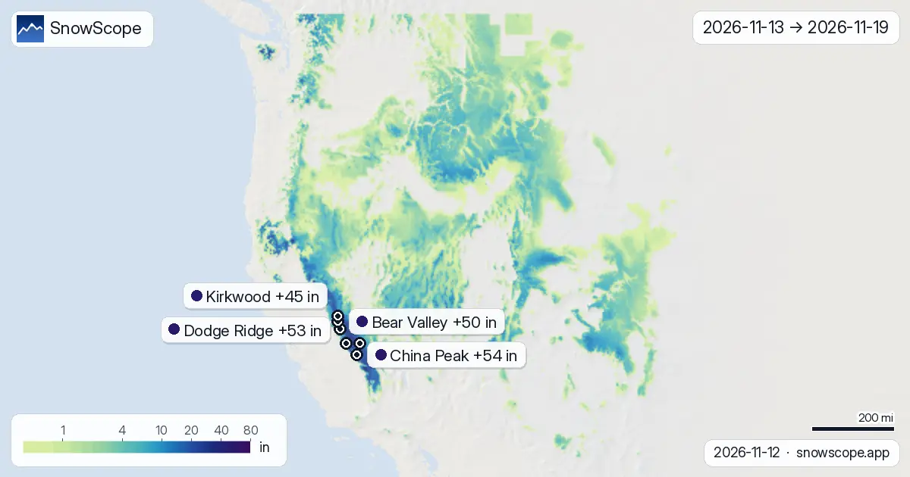
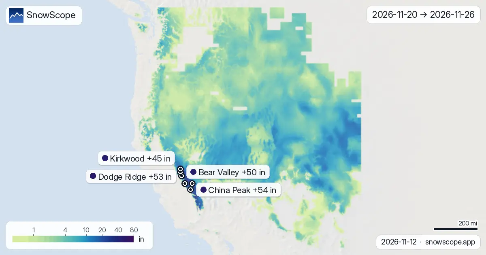

توقعات التلج غرب ميريكان حتى ل 26 نونبر: 54 إنش ف China Peak، 53 إنش ف Dodge Ridge
الخرائط ديالنا لجوج سيمانات كتبين فين خاصو يطيح التلج الجديد فغرب ميريكان بين 13 نونبر و 26 نونبر، حسب جوج الموديلات العالمية اللي كيوصلو لجوج سيمانات، ECMWF و GFS: كناخدو الوسط ديال بجوج وديما كنعطيو المجال ديالهم. الكمية الكبيرة غادي تمشي ل China Peak: شي 54 إنش (137 سم) فالجهة الفوقانية، 16 إنش (41 سم) حتى ل 91 إنش (232 سم) حسب الموديل، ومن بعد Dodge Ridge ب 53 إنش (135 سم). فالأرض، أول حاجة كنشوفوها هي الظل: التلج كيبقى فين ماكتوصلش الشمس.
شوف توقعات التلج مباشرة ديال China Peak فالتطبيق ديال SnowScopeالعلو ديال التلج، التنبيهات والخريطة 3D، فابور.
محطة بمحطة، 14 يوم الجايين
China Peak (ميريكان): تقريبا 54 إنش (137 سم) ف 14 يوم (16 إنش (41 سم) حتى ل 91 إنش (232 سم) بين الموديلات)، 29 إنش (73 سم) فالسيمانة اللولة و 25 إنش (64 سم) فالثانية. علّم على 14 نونبر: هذاك هو أكبر نهار، ب 11 إنش (27 سم)، من 7 أيام ب 5 سم ولا كثر.
Dodge Ridge (ميريكان): تقريبا 53 إنش (135 سم) ف 14 يوم (19 إنش (48 سم) حتى ل 87 إنش (222 سم) بين الموديلات)، 27 إنش (68 سم) فالسيمانة اللولة و 26 إنش (67 سم) فالثانية. علّم على 20 نونبر: هذاك هو أكبر نهار، ب 10 إنش (26 سم)، من 8 أيام ب 5 سم ولا كثر.
Bear Valley (ميريكان): تقريبا 50 إنش (128 سم) ف 14 يوم (19 إنش (47 سم) حتى ل 82 إنش (209 سم) بين الموديلات)، 26 إنش (67 سم) فالسيمانة اللولة و 24 إنش (61 سم) فالثانية. النهار اللي فيه التلج كثر هو 14 نونبر ب 9 إنش (23 سم)؛ 8 أيام كيجيبو 5 سم ولا كثر.
Badger Pass (ميريكان): تقريبا 50 إنش (126 سم) ف 14 يوم (17 إنش (43 سم) حتى ل 83 إنش (210 سم) بين الموديلات)، 26 إنش (66 سم) فالسيمانة اللولة و 24 إنش (61 سم) فالثانية. النهار اللي فيه التلج كثر هو 20 نونبر ب 9 إنش (23 سم)؛ 8 أيام كيجيبو 5 سم ولا كثر.
ف Mammoth Mountain (ميريكان) جوج سيمانات كيجمعو تقريبا 46 إنش (118 سم) (15 إنش (38 سم) حتى ل 78 إنش (197 سم) حسب الموديل): 23 إنش (58 سم) حتى لآخر السيمانة اللولة، ومن بعد 24 إنش (60 سم) زيادة. النهار اللي فيه التلج كثر هو 26 نونبر ب 9 إنش (22 سم)؛ 6 أيام كيجيبو 5 سم ولا كثر.
ف Kirkwood (ميريكان) جوج سيمانات كيجمعو تقريبا 45 إنش (114 سم) (17 إنش (44 سم) حتى ل 73 إنش (185 سم) حسب الموديل): 24 إنش (62 سم) حتى لآخر السيمانة اللولة، ومن بعد 20 إنش (52 سم) زيادة. علّم على 14 نونبر: هذاك هو أكبر نهار، ب 8 إنش (20 سم)، من 8 أيام ب 5 سم ولا كثر.
| المحطة | العلو ديال التلج | تلج جديد، 72 س | جاي، الأيام الجاية | الفوق |
|---|---|---|---|---|
| China Peak | 0 إنش (0 سم) | 0 إنش (0 سم) | 14 إنش (35 سم) | 8629 قدم (2630 م) |
| Dodge Ridge | 6 إنش (16 سم) | 0 إنش (0 سم) | 12 إنش (30 سم) | 8143 قدم (2482 م) |
| Bear Valley | 7 إنش (19 سم) | 0 إنش (0 سم) | 15 إنش (39 سم) | 8484 قدم (2586 م) |
| Badger Pass | 0 إنش (0 سم) | 0 إنش (0 سم) | 10 إنش (25 سم) | 7795 قدم (2376 م) |
| Mammoth Mountain | 6 إنش (15 سم) | 0 إنش (0 سم) | 9 إنش (24 سم) | 11024 قدم (3360 م) |
| Kirkwood | 8 إنش (20 سم) | 0 إنش (0 سم) | 16 إنش (40 سم) | 9462 قدم (2884 م) |

السيمانة اللولة مقابل الثانية
بالسيمانة، اللولة (من 13 نونبر حتى ل 19 نونبر) فيها 31 % ديال التلج ديال جوج سيمانات فالمنطقة؛ والثانية (من 20 نونبر حتى ل 26 نونبر) فيها الباقي.
بكري: China Peak، Dodge Ridge، Bear Valley، Badger Pass و Kirkwood غادي ياخدو أغلب التلج ديالهم فالسيمانة اللولة.
من بعد: ف Mammoth Mountain السيمانة الثانية كتجيب كثر من اللولة.
فالخريطة، تقريبا 182680 ميل² (473140 كم²) ديال الجبال غادي ياخدو 20 سم ولا كثر فجوج سيمانات، و 16992 ميل² (44010 كم²) غادي ياخدو 50 سم ولا كثر.

التلج الجديد حسب العلو
نفس جوج سيمانات حسب العلو، على كاع جبال المنطقة (كل كيلومتر مربع ديال الأرض، ماشي غير المحطات): بين 3281 قدم (1000 م) و 4921 قدم (1500 م): عادة 2 إنش (6 سم)، والربع اللي فيه التلج كثر فهاد الطبقة 4 إنش (10 سم) ولا كثر; بين 4921 قدم (1500 م) و 6562 قدم (2000 م): عادة 4 إنش (11 سم)، والربع اللي فيه التلج كثر فهاد الطبقة 7 إنش (18 سم) ولا كثر; بين 6562 قدم (2000 م) و 8202 قدم (2500 م): عادة 7 إنش (17 سم)، والربع اللي فيه التلج كثر فهاد الطبقة 10 إنش (25 سم) ولا كثر; بين 8202 قدم (2500 م) و 9843 قدم (3000 م): عادة 11 إنش (27 سم)، والربع اللي فيه التلج كثر فهاد الطبقة 15 إنش (38 سم) ولا كثر; بين 9843 قدم (3000 م) و 14764 قدم (4500 م): عادة 13 إنش (33 سم)، والربع اللي فيه التلج كثر فهاد الطبقة 18 إنش (46 سم) ولا كثر.
الأيام اللي خاص تراقب
أيام التلج فالمنطقة، على 195 محطة فاللائحة ديالنا: السبت 14 نونبر (56 من 195 محطة ب 5 سم ولا كثر، حتى ل 11 إنش (27 سم) ف China Peak)، الأربعاء 18 نونبر (93 من 195 محطة ب 5 سم ولا كثر، حتى ل 9 إنش (22 سم) ف Mt. Shasta Ski Park)، السبت 21 نونبر (62 من 195 محطة ب 5 سم ولا كثر، حتى ل 5 إنش (13 سم) ف Echo Mountain) و الخميس 26 نونبر (92 من 195 محطة ب 5 سم ولا كثر، حتى ل 9 إنش (22 سم) ف China Peak).
كيفاش تقرا الخرائط
كيفاش تقراهم: خريطة لجوج سيمانات مجموعين، وواحدة لكل سيمانة. كل ما كان الأخضر فاتح، كل ما قل التلج الجديد؛ الأزرق الغامق والبنفسجي كيعلّمو على الكميات الكبيرة. كل علامة كتبين الجهة الفوقانية ديال المحطة.
خود السيمانة الثانية بحال اتجاه. ملي كيتفقو جوج الموديلات، المجال كيكون ضيق؛ وملي كيكون واسع، تسنى الخرائط الجاية قبل ما تحجز. خرائط جديدة كيخرجو كل صباح.
نصايح للي كيتزلجو
- خطط للسيمانة اللولة بهاد الخرائط؛ خلي الثانية مرنة وعاود شوف من بعد شي أيام.
- علو 0 °C غير توقع ويقدر يتحرك بشي مئات ديال الميترات، وهادشي كيبدل فين الشتا كتولي تلج: عاود شوف الخريطة نهار قبل.
- قبل أي خرجة برا البيست ولا جولة، قرا النشرة الرسمية ديال الانهيارات (الروابط لتحت).
- التلج فالخريطة ماكيعنيش بلي المحطة محلولة: شوف التيليسييج والتواريخ فالموقع ديالها.
على هاد الأرقام
العلو ديال التلج فالمحطات هو أكثر تلج فالجهة الفوقانية حسب الموديل ديال التلج ديال SnowScope (تقريبا 1 كم، الحساب ديال 12 نونبر)؛ هادو تقديرات لمنطقة، ماشي قياس فنقطة وحدة. الأرقام ديال محطات القياس مقاسة فالتاريخ المكتوب. التوقعات يمكن تتبدل. ديما شوف النشرة الرسمية ديال الانهيارات قبل ما تخرج من البيست.
النشرات الرسمية ديال الانهيارات: avalanche.org
كيفاش تستاشهد بهاد المقال
للبحث، التعليم ولا الصحافة: الأرقام والرسومات تقدر تعاود تخدم بيهم بحرية تحت CC BY 4.0 مع هاد الاستشهاد.
SnowScope (2026), توقعات التلج غرب ميريكان حتى ل 26 نونبر: 54 إنش ف China Peak، 53 إنش ف Dodge Ridge, https://snowscope.app/blog/ar/2026/11/us-west-2-week-snow-forecast-maps-12-november-2026.html, تشاف ف 2026-11-12
SnowScope (Atlas Labs). (2026, November 12). توقعات التلج غرب ميريكان حتى ل 26 نونبر: 54 إنش ف China Peak، 53 إنش ف Dodge Ridge. SnowScope snow reports. https://snowscope.app/blog/ar/2026/11/us-west-2-week-snow-forecast-maps-12-november-2026.html
BibTeX
@misc{snowscope2026uswest2weeksnowforecastm,
author = {{SnowScope (Atlas Labs)}},
title = {توقعات التلج غرب ميريكان حتى ل 26 نونبر: 54 إنش ف China Peak، 53 إنش ف Dodge Ridge},
year = {2026},
month = nov,
howpublished = {\url{https://snowscope.app/blog/ar/2026/11/us-west-2-week-snow-forecast-maps-12-november-2026.html}},
note = {Published 2026-11-12 18:20 UTC; accessed 2026-11-12}
}· CC BY 4.0 · الطريقة، الداتا والأدوات →
China Peak: التلج والحرارة حسب العلو، هاد الشتا مقارنة مع اللي فاتت (الأدوات) →
تابع China Peak
فابور: ميساج ملي يجي التلج، والتوقعات كل صباح.
تقارير أخرى ديال التلج

توقعات التلج ف Alpental نهار 13 نونبر 2026: تقريبا 1 بوصة فالجيهة العليا ديال الجبل، الشتا تقريبا حتى للقمة هاد الويكاند مع حد ديال التلج حدا 5,400 حتى ل 5,600 قدم، ومن بعد 4 حتى ل 5 بوصات ديال الشتا والتلج مخلطين لفوق السيمانة الجاية.

Vail بالأرقام: القمة العادية تقريبا 64 in (162 cm) فالوسط ف 46 شتوة اللي فاتو، مارس أكثر شهر فيه التلج، مع البيستات، الطريق والسلامة.

Steamboat فـ Colorado للعائلات: شنو كيناسب الصغار بزاف، الدراري، المراهقين والواليدين، مع التلج ديال 46 شتوة اللي فاتو فتلاتة ديال العلوات.